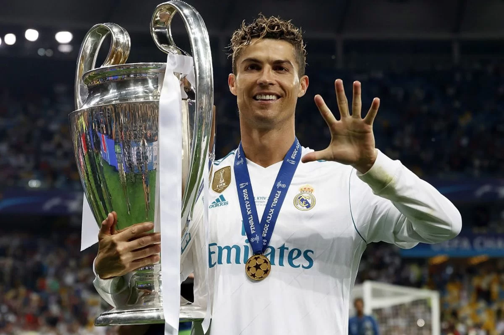

| |
home | classificação | ganhadores | artilheiros | |
| |
home | classificação | ganhadores | artilheiros | |
 |
Harry Kane, Kylian Mbappé, Erling Haaland e Antoine Griezmann aumentaram a sua conta pessoal na segunda mão dos oitavos-de-final e partilham a liderança da lista de goleadores desta edição da competição.Melhores marcadores da Champions League 2023/246 Antoine Griezmann (Atlético de Madrid)6 Erling Haaland (Man City) 6 Harry Kane (Bayern) 6 Kylian Mbappé (Paris) 5 Julián Álvarez (Man City) 5 Galeno (Porto) 5 Rasmus Højlund (Man United) 5 Álvaro Morata (Atlético de Madrid) 4 Jude Bellingham (Real Madrid) 4 Evanilson (Porto) 4 Phil Foden (Man City) 4 Ciro Immobile (Lazio) 4 Gabriel Jesus (Arsenal) 4 Loïs Openda (Leipzig) 4 Danylo Sikan (Shakhtar) |
